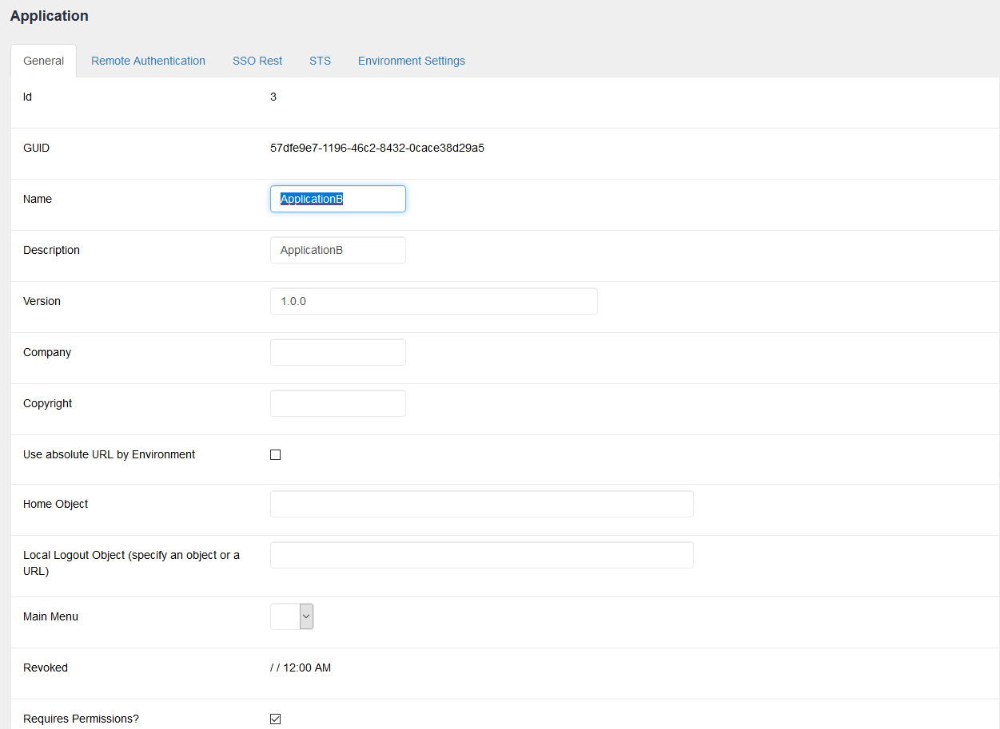
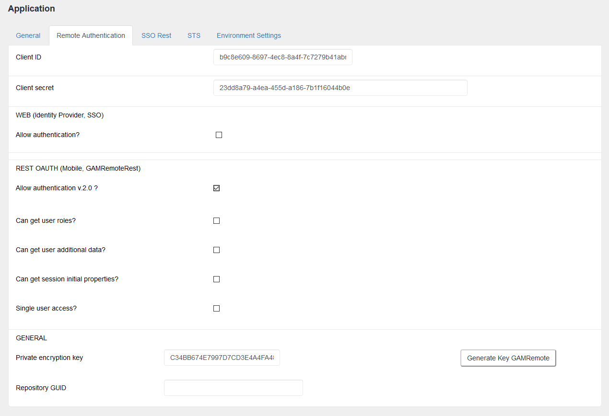

In GAM Remote Rest Authentication type (Oauth 2.0), you should consider following some configuration steps at both the GAM of clients and at the Identity Provider's.
Note, here, the server-side configuration.
First define a GAM Application.

In the Remote Authentication tab, set the Client Id and Client secret, which must match those configured at the client.

The configuration of the Application that applies to GAM Remote Rest authentication type is under section REST OAUTH (Mobile, GAMRemoteRest).
- Allow Authentication v 2.0. This must be checked to allow authentication to this GAM. When it is not checked, the following error is shown in the client upon an attempt to authenticate with the server: Remote authentication is not allowed in this application. Please contact the administrator. (GAM230)
- Can get user roles. Check this option to enable the server to send the user roles to the client for log in. The roles must be defined in the client as well as in the server, bearing in mind that the External Id must be the same at the client and at the server. It's the same criteria as the one used in Managing Roles in applications using SSO.
- Can get user additional data. When checked, the server will send the extended attributes of the user to the client, when he logs in.
- Can get session initial properties. When checked, the dynamic properties set at the login will be sent to the client.
- Private encryption key. The call among Rest services may be encrypted; the same key must be used for the Identity Provider (IDP) and for the client.
- RepositoryGUID. Specifies the repository GUID in the IDP. Only required when the IDP GAM is multitenant.
|